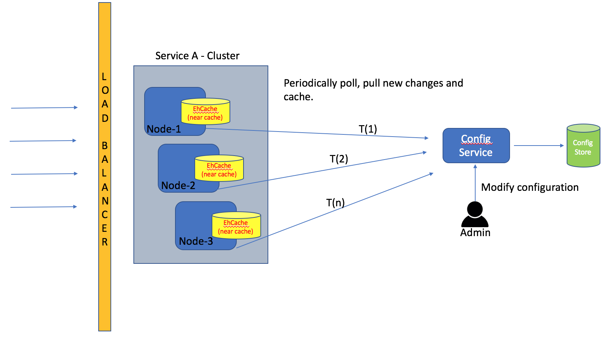
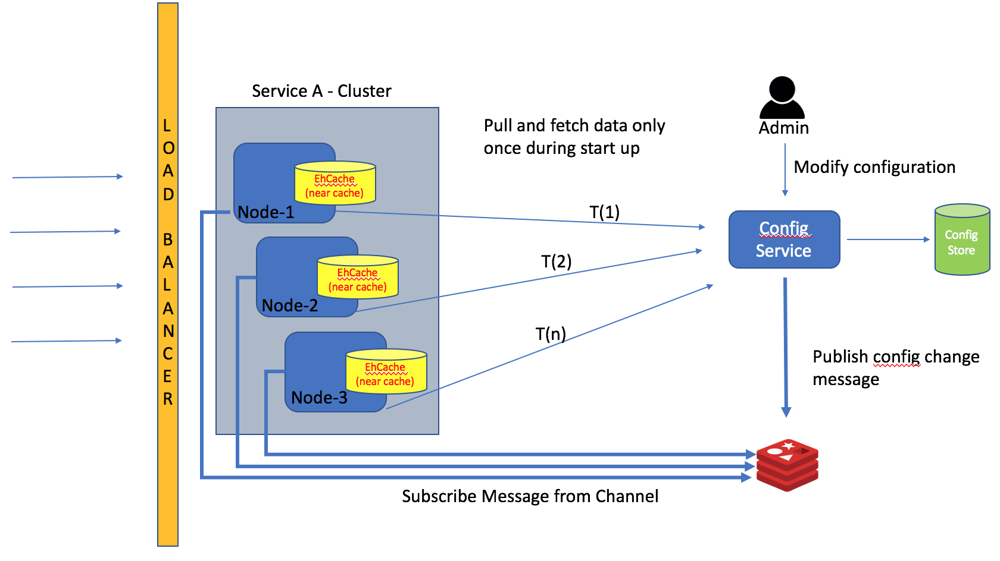

Elan's Tech Blog
Home
About Me
LinkedIn
Facebook
GitHub
October 13, 2017
Redis - Using Pub-Sub

Fig 1: MicroServices Storing config in the near cache

Fig 1: Near cache with pub-sub for immediate update of config